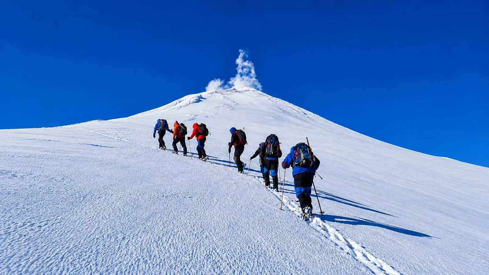
Sube elVillarrica.
Un guía cada tres personas, desde Pucón hasta el cráter.
- #1 en Pucón
- De 147 tours en Tripadvisor
- 5,0 de 5
- 666 opiniones en Tripadvisor
- Desde 2015
- Agencia familiar
Expediciones extraordinarias. Exclusivamente tuyas.
Terra Volcano es una agencia de montaña de Pucón, fundada en 2015 por el escalador chileno Richard Diaz. La regla es simple: un guía cada tres personas, siempre.
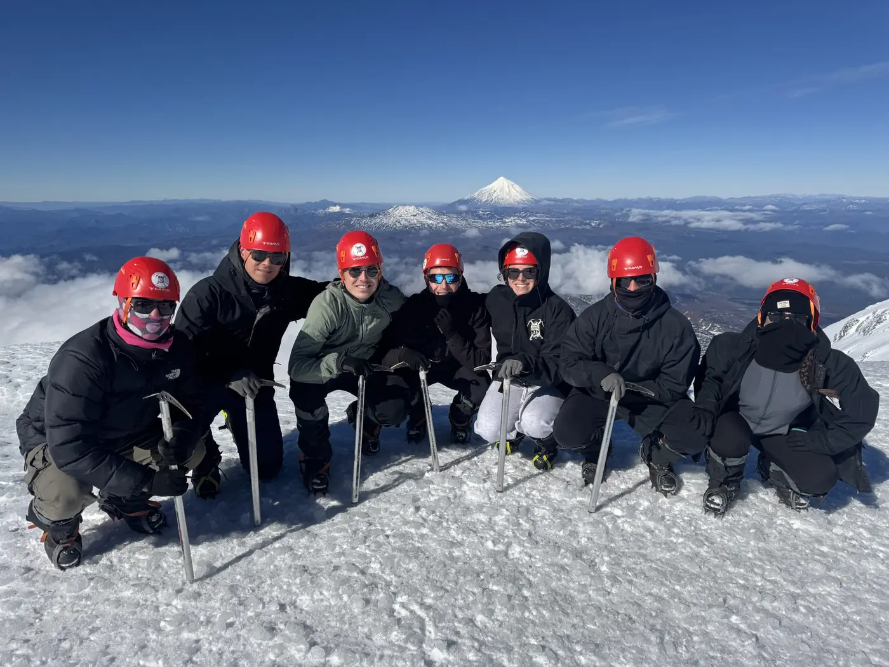
Calidad y experiencia
Aventuras de primer nivel, cuidadas hasta el último detalle.
Compromiso
Tomamos tu sueño como propio, con profesionalismo y trato cercano.
Amamos lo que hacemos
Celebramos cada logro y te acompañamos a superar tus límites.
Familia y territorio
Agencia familiar con guías en su mayoría locales. Al reservar apoyas a familias de Pucón.
Tu día en el Villarrica.
- Salida
- 6:00, desde la agencia
- Duración
- 8 horas
- Dificultad
- Media, sin experiencia previa
- Edad
- Mayores de 18 años
- Precio
- 150.000 CLP por persona
Salida desde Pucón
Nos juntamos a las 6:00 en la agencia y partimos juntos hacia el volcán.
Control de CONAF
Los guardaparques revisan los permisos de la agencia y el equipamiento técnico. Sin eso, nadie sube.
Centro de esquí
Empieza el sendero a pie. Se reparte el equipo y se revisa el pronóstico.
Fin del andarivel
Donde desembarcas si tomaste el telesilla. Ahorra cerca de una hora sobre arena volcánica y roca suelta.
La Capilla
Parada técnica entre las estructuras de un andarivel abandonado. Acá se come, se hidrata y se calzan los crampones.
Falsa cumbre
Una planicie que engaña: la pendiente hace creer que llegaste. Es el último respiro antes del tramo vertical.
Borde del cráter, 2.847 m
Máscara de gas obligatoria por las fumarolas. Desde acá se ven los lagos y el Lanín.
La bajada y el cierre
Al final del día compartimos una once con los guías y con todo el grupo.
Tú traes
Dos capas de ropa, protector solar, gorro, lentes de sol, dos litros de agua y algo para comer: sándwiches, barras, frutos secos o chocolate.
Incluye
- Entrada al parque nacional
- Crampones, piolet, casco y máscara de gas
- Mochila de 32 litros
- Chaqueta, pantalón, bastones, guantes, polainas y botas
- Guía en español e inglés
- Seguro básico de accidentes
- Traslado desde la agencia, ida y vuelta
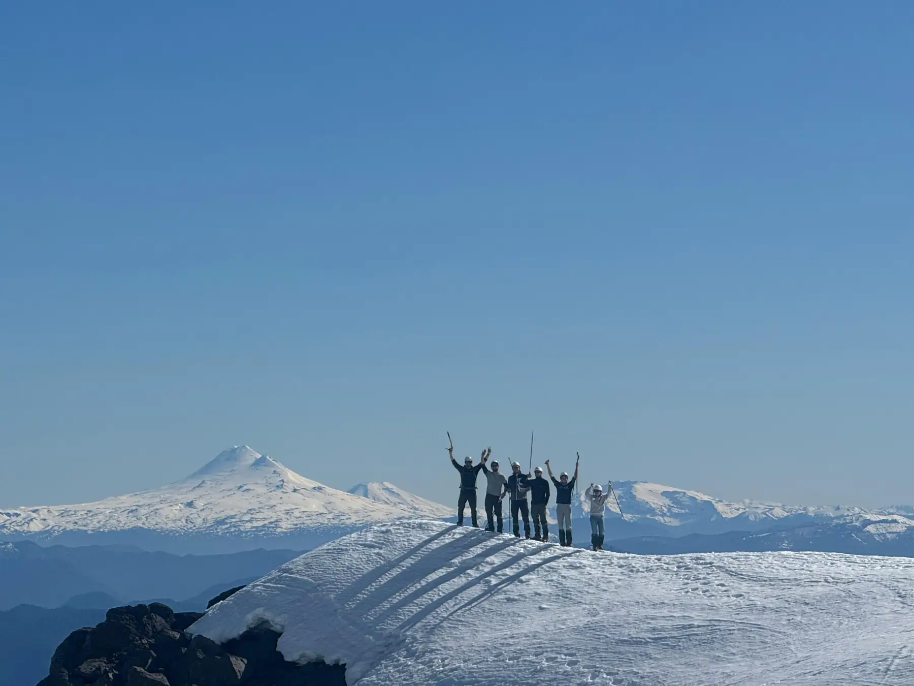
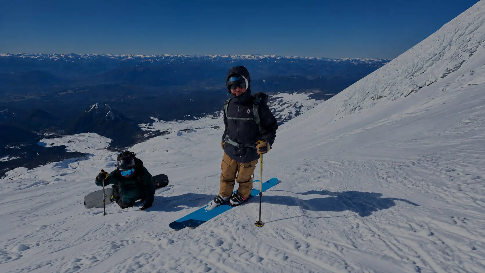
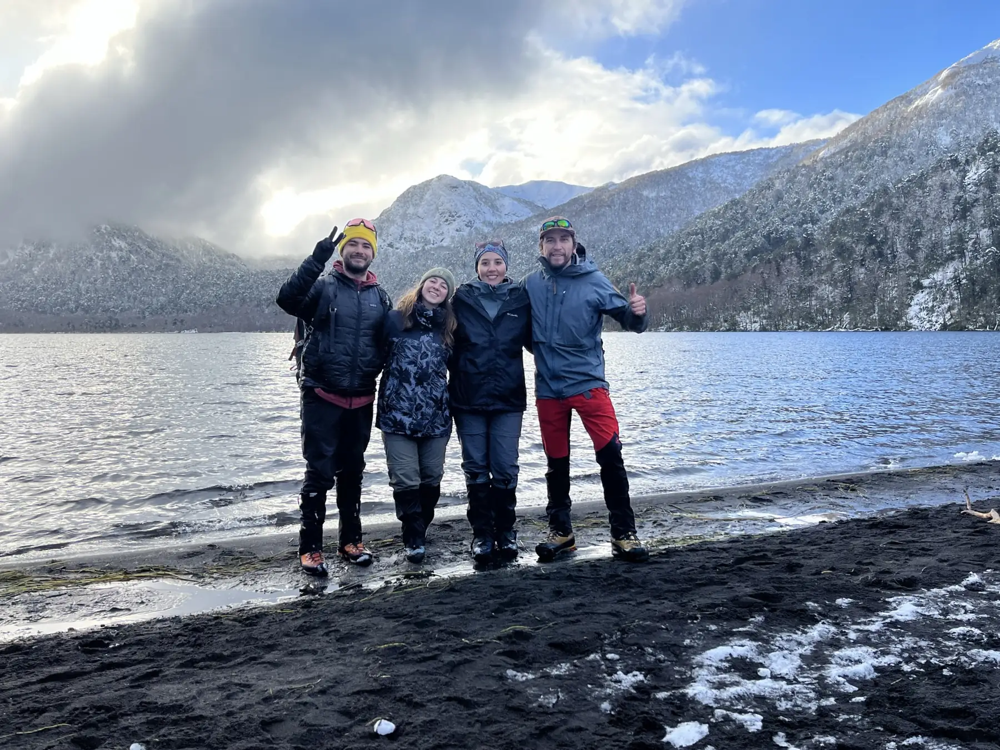
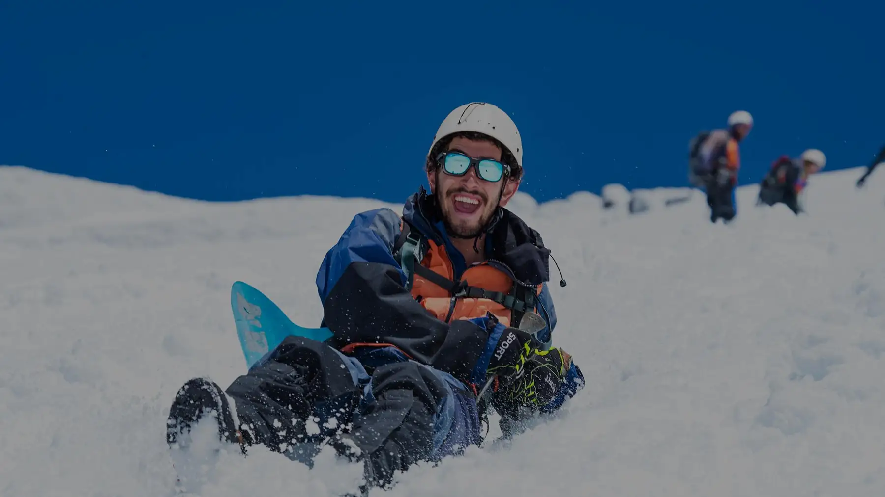


Elige tu rumbo
Ascensos
Volcanes de la Araucanía, con crampones y piolet.
- Villarrica8 horas
- Quetrupillán11 horas
- Lanín2 días
- Llaima13 horas
- Mocho-Choshuenco1 día
- Sollipulli19 horas
- Lonquimay15 horas
Ski touring
Se sube con esquís y se baja por nieve de volcán.
- Villarrica10 horas
- Quetrupillán10 horas
- Lanín1 día
- Llaima13 horas
- Mocho-Choshuenco1 día
- Sollipulli19 horas
- Lonquimay15 horas
Trekking
Bosques, lagos y araucarias, a paso tranquilo.
- Lagos Andinos8 horas
- Huerquehue9 horas
- Santuario El Cañi10 horas
Invierno
Nieve para quienes parten de cero.
- Clase grupal de esquí, 2 horas9 horas
- Clase privada de 2 horas con equipo9 horas
- Clase privada de 1 hora9 horas
- Nieve sin esquís9 horas
Otras actividades
Rafting, canyoning y Huilo-Huilo, a un paso de Pucón.
- Canyoning en el Salto del Claro4 horas
- Rafting alto Trancura3 horas
- Rafting bajo Trancura3 horas
- Día completo en Huilo-Huilo12 horas
Travesías
Varios días de montaña, lejos de las rutas habituales.
- Travesía Villarrica, 3 días3 días
- Travesía Villarrica, 5 días5 días
- Trilogía Araucana4 días
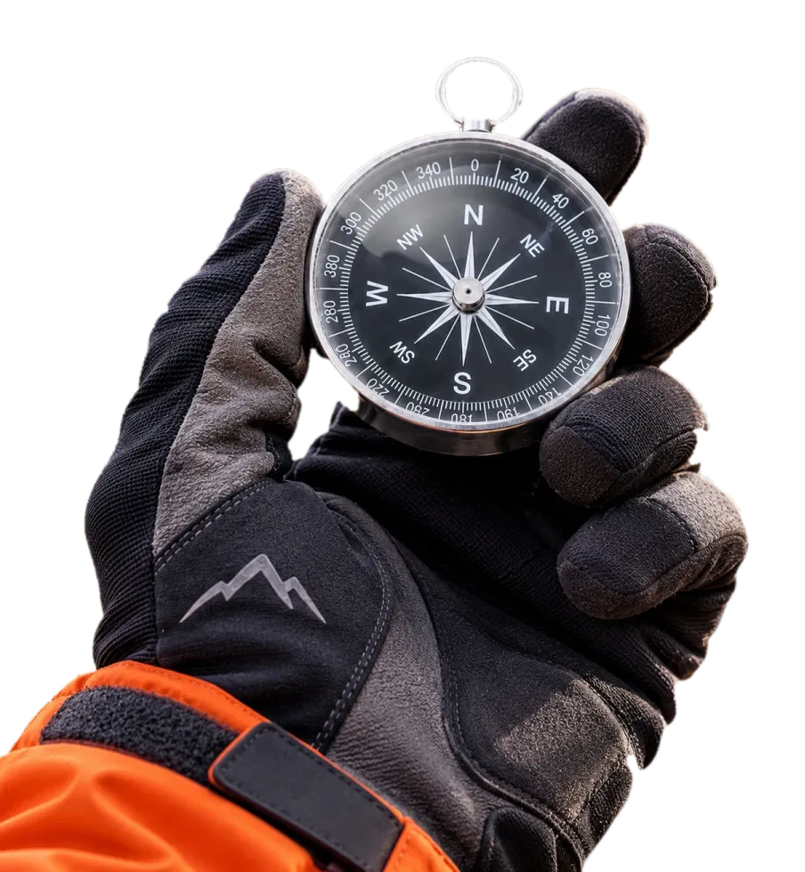
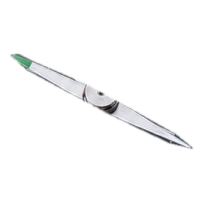
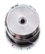
Así se vive la montaña.
Saltar fotos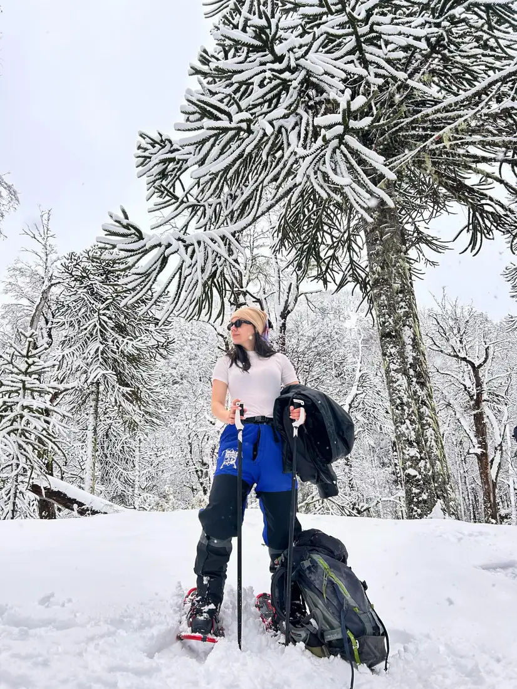
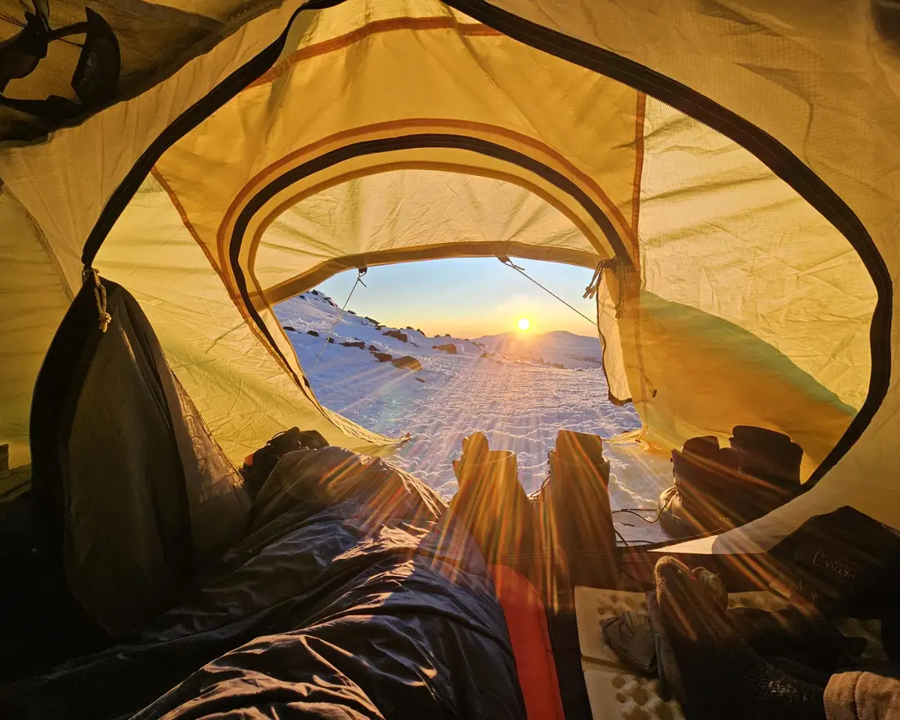
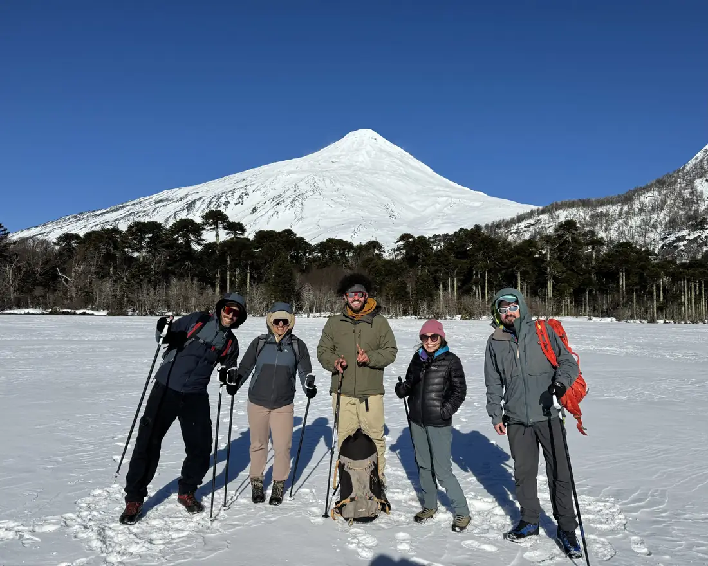
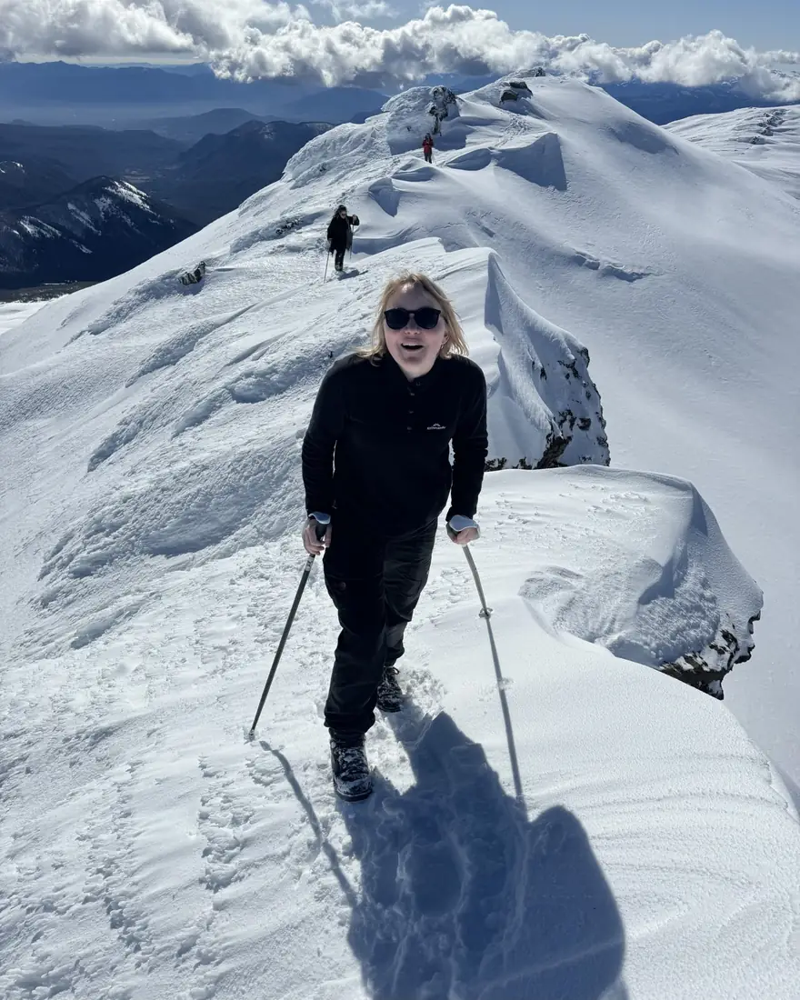
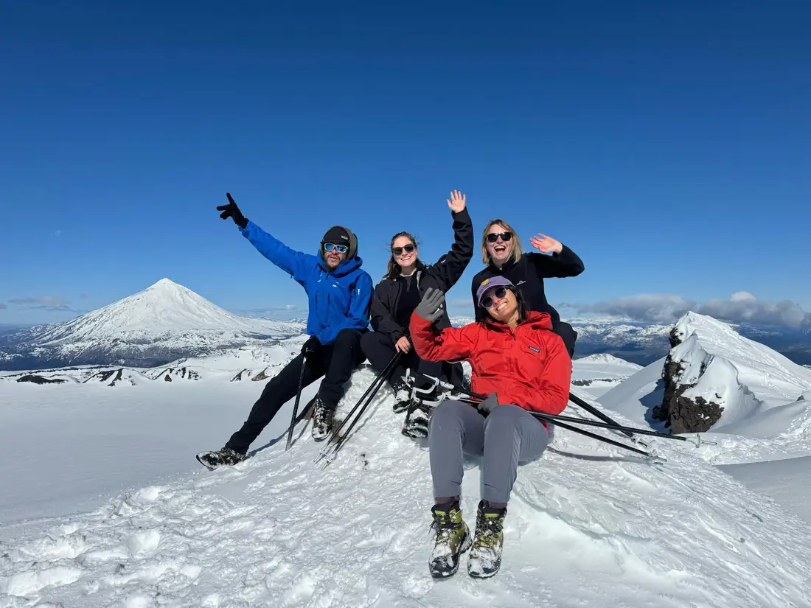
La próxima foto puede ser la tuya.
Reservar por WhatsAppDe 147 tours en Pucón#1 en Tripadvisor.
Quienes ya subieron eligen a Terra Volcano para ascensos, ski touring y aventuras en Pucón: N.º 1 de 147 tours en Tripadvisor, con 5,0 de 5 en 666 opiniones, y 4,8 de 5 en Google.
Ver opiniones en Tripadvisor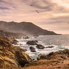
Seaside24792894894Ascenso al Villarrica, oct. 2026El tiempo no ayudó, pero la experiencia lo arregló
Richard, nuestro guía, el más top! Soy de Andorra pero para que me entendáis, como un español, y con el se siente cercano, acogedor y muy profesional. No tuvimos suerte con el temporal pero la experiencia fue 10/5.
Leer en TripadvisorLila NAscenso al Villarrica, oct. 2026 Ascenso al Villarrica
Los guías de este viaje hicieron que la experiencia fuera completa. Fueron comprensivos, expertos, atentos y divertidos durante toda la subida al volcán. Sabían cómo mantener la moral alta a la vez que nos animaban. Me sentí seguro todo el tiempo.
Leer en Tripadvisor Yissele CAscenso al Villarrica, oct. 2026
Yissele CAscenso al Villarrica, oct. 2026Una experiencia diferente y excelente
Una excelente experiencia, Felipe siempre atento y con el objetivo de alcanzar la cumbre un día maravilloso, agradecer el apoyo para alcanzar la cumbre y la bajada en culopatin 100% recomendables de inicio a fin.
Leer en TripadvisorNicolás LAscenso al Villarrica, oct. 2026 Gran experiencia
Excelente atención, muy amables, hermosa experiencia!
Leer en TripadvisorHarry TAscenso al Villarrica, oct. 2026 Ascenso al volcán Villarrica
Personal muy, muy amable, todos hicieron que el día fuera muy agradable. Lo recomendaría al 100 %.
Leer en Tripadvisor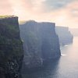
Daniel LAscenso al Villarrica, oct. 2026Caminata increíble
Verdaderamente increíble, la mejor caminata en la que he estado.
Leer en Tripadvisor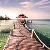
Daniel Santiago ATrekking por Lagunas Andinas, oct. 2026Recorrido de lagunas andinas
Muy buen servicio la atención y acompañamiento de la agencia y el guía fue excelente.
Leer en Tripadvisor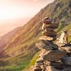
Josimar Arroyo DSki touring en el Villarrica, oct. 2026Atención garantizada
Muy buena agencia, brindan información a tiempo y si hay cambios de planes por clima u otros eventos, gestionan y solucionan para que tu experiencia en la ciudad sea agradable.
Leer en TripadvisorAAndrew HanesSki touring en el Villarrica, sept. 2026 Gran empresa de guías
Experiencia excelente, reservé un par de viajes con Terra Volcano y quedé muy satisfecho con ambos. Mi guía de esquí para el volcán Villarrica es increíble, valora la seguridad por encima de todo, pero también quería que me lo pasara muy bien. Lo recomiendo encarecidamente.
Leer en TripadvisorRRoad40038998661Ascenso al Villarrica, sept. 2026 Fue una excursión increíble con unos guías increíbles. Tenían muchos conocimientos y experiencia. ¡Lo volvería a hacer al 100 %!
Leer en Tripadvisor
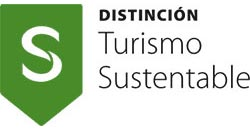
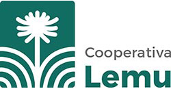